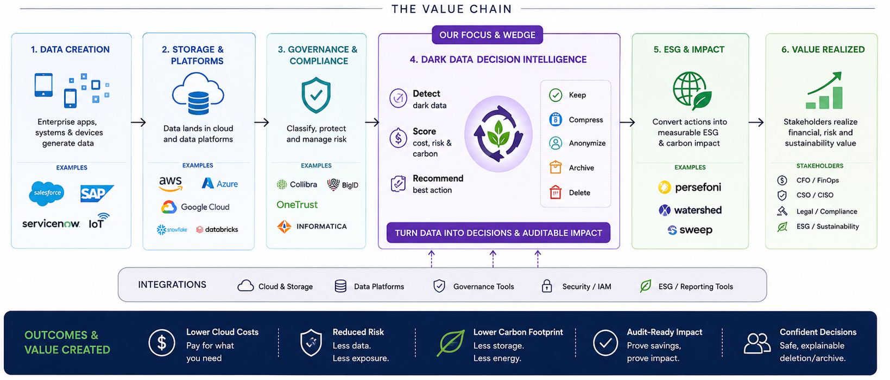
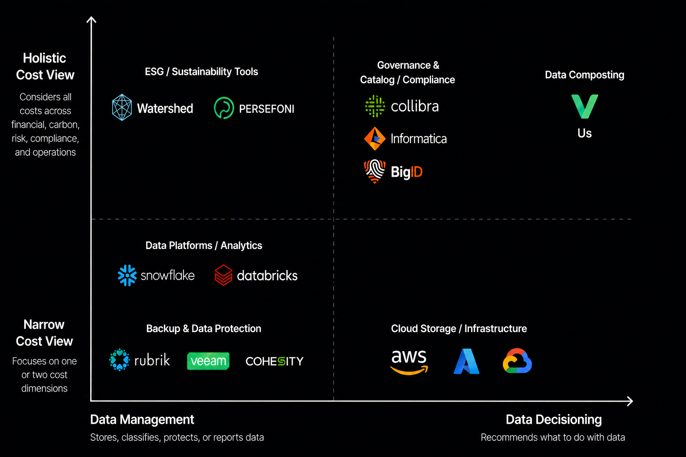
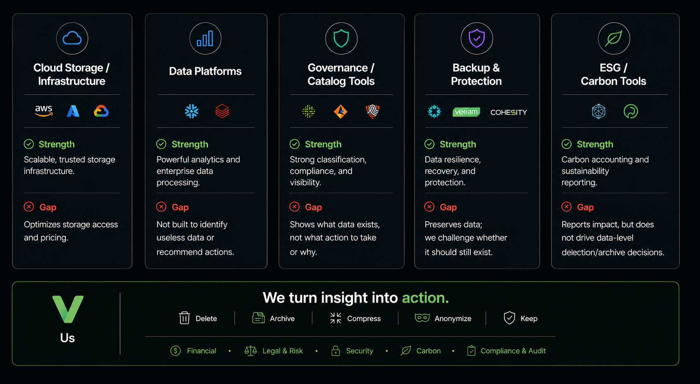
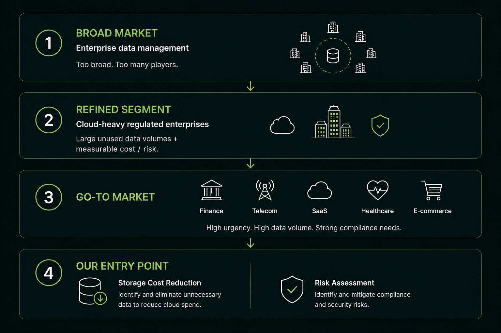
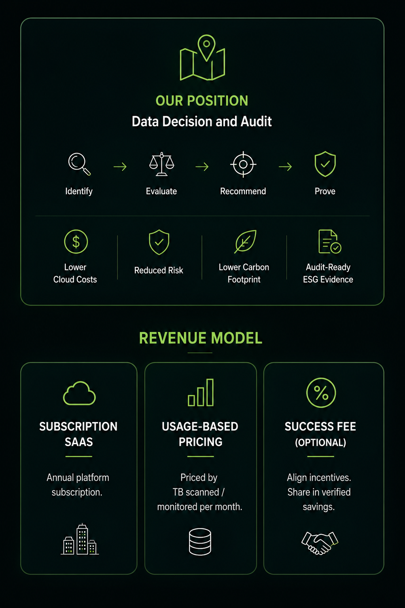

Enterprises store vast amounts of data they will never use — and keep it forever out of fear. We score every dataset on Cost + Carbon Footprint + Legal Risk, and make it safe and auditable to delete.

Existing tools store, govern, and report data.
We help enterprises decide what dark data is still worth keeping.



